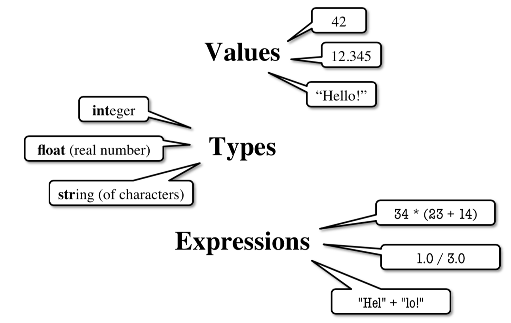

Expressions and Data Types#
Introduction to computer programming
Management and Artificial Intelligence
Why Python?#
A high-level language for beginners
with a clean syntax, but…
Industrial strength programming language used at thousands of companies (one of three official Google languages)
Free, well documented, well supported
Expressions and Statements#
A (Python) program is composed by a sequence of:
definitions (also expressions) which are evaluated
statements (also commands) which are executed
In plain terms…
expressions yield some results (e.g.,
5 * 5)statements instruct the interpreter to do something (e.g., print on screen, assign to variable)
Expressions vs. Statements#
Expressions: Represent something
Python evaluates expressions
end-result is a value
>>> 2.3 # a plain literal
2.3
>>> (7*3+1)-4 # 4 literals and some operators
18
Statements: Do something
Python executes statements
no need to return a value
>>> print("Hi there!")
Hi there!
>>> import sys
Interactive vs. Script Mode vs. Jupyter Notebook#
Interactive Mode: perfectly fine for testing and learning.
Type your commands/expressions into the shell and Python will execute/evaluate them:
|
\(\leftarrow\)input |
|
\(\leftarrow\)output |
Script Mode: is what you normally do in the real world.
Write the entire source code in a text file ending with the.pyextension (saymyscript.py).
myscript.pywill be executed in its entirety by the Python interpreterJupyter Notebook: what we will in this course most of the time.
Write the code into a code cell and execute it
print(5 * 5)
25
Programming in Python#
programs manipulate data objects
each object has its own type, which defines the type of operations that can be done with them
data objects can either be:
Scalar: primitive data types that cannot be subdivided (like numbers, booleans)
Non-scalar: composite data types with internal structure that can be accessed (like lists, dictionaries, objects)

Scalar Objects#
int: represents integers (e.g.,5)float: represents real numbers (e.g.,3.14)bool: represents Boolean values (TrueorFalse)NoneType: special with only one value (None)
type() function if you are not sure about the data type.
Examples:
type(109)
int
type(10.9)
float
Type int()#
Values: \(~~~~~~~~~~~~~\ldots, -3, -2, -1, 0, 1, 2, 3, \ldots\)
Integer literals look like a sequence of numbers with no periods nor commas.
Operations:
+,-,*,/,//(floor division),%(modulus, remainder),**(exponentiation)-(unary minus, to negate a number)
Examples:
7/5
1.4
7//5 # NOTE: // is the floor division!
1
Type float()#
Values: \(~~~~~~~~~~~~~~\) some (approximated) range of \(\mathbb{R}\)
Note that:
numbers with a “.” are decimals (e.g.,
2.0)numbers with no decimal separator are integers (e.g.,
2)
Operations:
+,-,*,/,//(floor division),%(modulus, remainder of division),**(exponentiation)-(unary, invert sign)
7.0/5.0
1.4
7.0//5
1.0
Python stores floating point numbers as base 2 (binary) fractions: $\( \text{\{number\}} = \text{\{integer mantissa\}} \cdot 2^{-\text{\{exponent\}}} \)$
For example: \(0.125 = 1 \cdot 2^{-3} = 1\cdot \frac{1}{2^3}=1\cdot \frac{1}{8}\).
Python may yield some approximation errors, that propagate as expressions go through.
Example:
0.1+0.2
0.30000000000000004
0.1+0.2+0.1+0.2
0.6000000000000001
0.1+0.2+0.1+0.2+0.1+0.2+0.1+0.2
1.2000000000000002
Type bool#
Values:
\(~~~~~~~~~~~~~~~\) True and False (capitalized!)
Operations:
not a = \(\begin{cases}
\texttt{True} & \text{if} \texttt{ a } \text{is} \texttt{ False }\\
\texttt{False} & \text{if} \texttt{ a } \text{is} \texttt{ True }
\end{cases}\)
a and b = \(\begin{cases}
\texttt{True} & \text{if both} \texttt{ b } \text{and} \texttt{ a } \text{are} \texttt{ True}\\
\texttt{False} & \text{otherwise}
\end{cases}\)
a or b = \(\begin{cases}
\texttt{True} & \text{if} \texttt{ a } \text{is} \texttt{ True } \text{or} \texttt{ b } \text{is} \texttt{ True }\\
\texttt{False} & \text{otherwise}
\end{cases}\)
Booleans are the output of comparisons between items (e.g., int or
float):
Order:
i<j,i>j,i<=j,i>=j(In)equality:
i!=j,i==j
Truth Table between two Boolean variables#
|
|
not |
not |
|
|
|---|---|---|---|---|---|
|
|
|
|
|
|
|
|
|
|
|
|
|
|
|
|
|
|
|
|
|
|
|
|
Type Conversions: explicit#
Switching between float and int can be performed via casting (explicit conversion):
float(2)converts value2(integer) to2.0(floating point)int(2.9)converts value2.9(floating point) to2(integer)
int() does not round to the nearest integer: rather, it
truncates the decimal part. To round to the nearest integer, use
round() instead.
Type Conversions: implicit#
Python supports widening automatically (implicit conversion):
Widening: Python does it automatically, if needed. Example:
1/0.5=2.0because Python casts1tofloatNarrowing: Python never does it automatically. Because narrowing leads to information loss!
Expressions#
Expressions are combinations of objects and operators
an expression yields a value, which has its own type
the simplest expression has the form:
<object, operator, object>
Arithmetic Operations on int and float: a Recap#
Syntax |
Operator |
Output Type |
|---|---|---|
|
Sum |
if either of them is float, result is float |
|
Difference |
if either of them is float, result is float |
|
Product |
if either of them is float, result is float |
|
Division |
result is float (always) |
|
Remainder (Modulo) |
if either of them is float, result is float |
|
Power of |
if either of them is float, result is float |
|
Floor division |
if either of them is float, result is float |
Comparison Between ints and floats: a Recap#
bool.
Expression |
Evaluation |
|
|---|---|---|
|
\(\rightarrow\) |
|
|
\(\rightarrow\) |
|
|
\(\rightarrow\) |
|
|
\(\rightarrow\) |
|
|
\(\rightarrow\) |
|
|
\(\rightarrow\) |
|
Chained Comparisons#
Comparisons can be chained arbitrarily and comparisons have the same priority:
i<j<k is the same as i<j and j<kSince comparisons do not act in a pairwise fashion, weird comparisons like
i<j>kare perfectly valid since it is equivalent to (i<j) and (j>k).
Operator Precedence#
Precedence between operators can be forced via parenthesis.
In principle, operators follow the PEMDAS order:
Parenthesis
Exponential
Multiplication and Division
Addition and Subtraction
The Big Picture of Operator Precedence#
Parenthesis:
(...)Exponentiation:
**Unary operators:
+and-Binary arithmetic:
*,/,//and%Binary arithmetic:
+and-Comparisons:
>,<,>=,<=,==,!=Logical
notLogical
andLogical
or